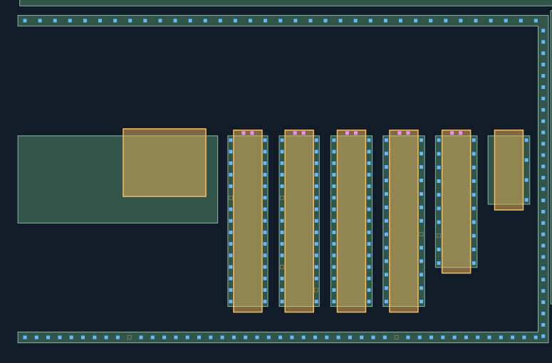
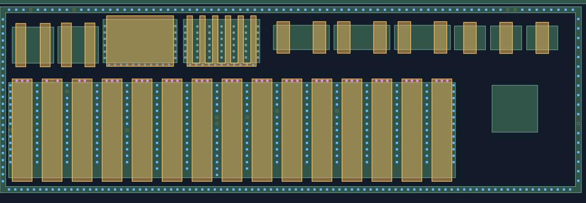
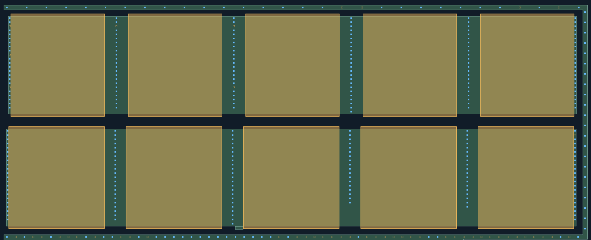
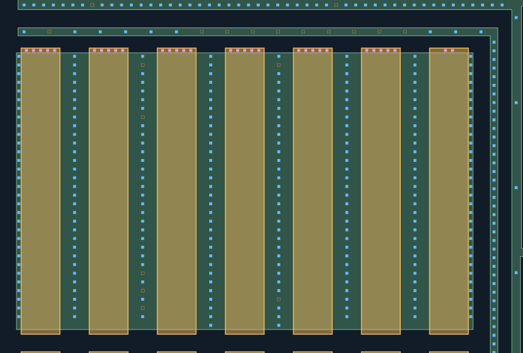
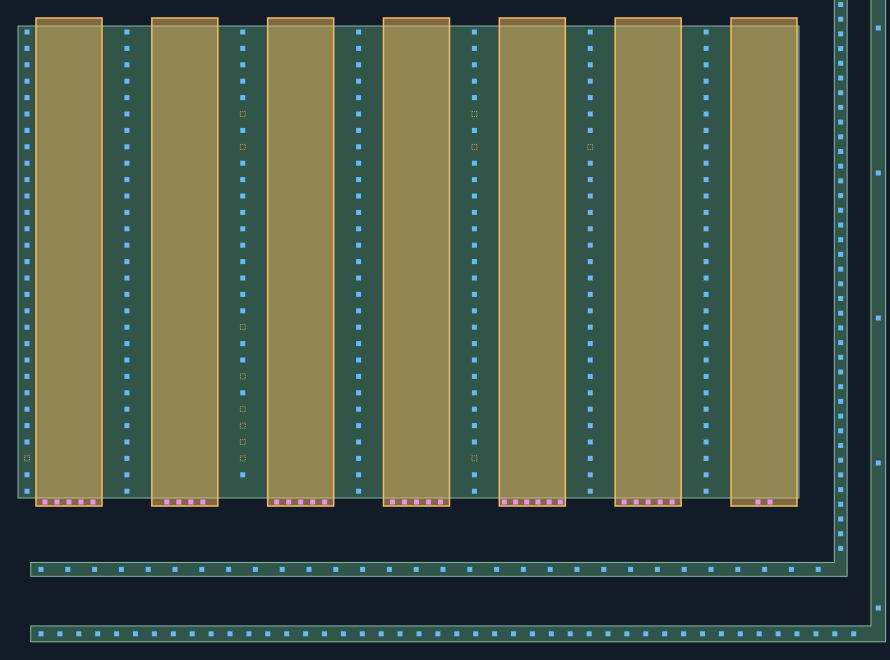
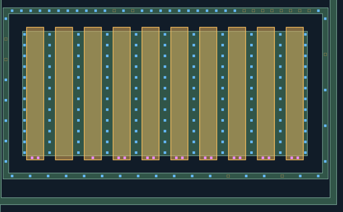

CT材料联合重建复核
蓝色：新增AA接触；紫色：新增POLY接触；灰蓝：已审CT，保持不变、不重复验收。
新孔均有照片观察支持，采用局部材料对应，未使用全幅盲投影。AA/POLY材料未修改。
橙色虚框仅为待查槽位，不计为CT，也不代表实际缺孔。
仅重建下列局部观察支持的孔列；未补齐缺少证据的位置，未画不代表没有孔。
新区域的材料对应仍为AI候选，孔数不是人工确认值。几何检查不是真实工艺DRC，M1归属未知。
整体质量门与防退化检查 ·
匹配与未选择观察记录
一次复核清单
新增1161源漏＋134栅端＋651环＝1946候选；既有2709记录保留。几何门只检查已输出候选，完整性仍待审。
- A 左侧阶梯6栅：已画源漏与上端栅孔是否对应？第6栅左侧列未得到可靠峰，未补孔。
- B 相邻15条长栅：源漏、上端栅CT及外围环是否对应？图中上方小MOS不属于本批栅端处理范围。
- C 左侧两排宽MOS：源漏与环候选是否正确？端部全宽亮带和栅CT的关系能否确认？请切换端部亮带原图和M1，10条宽栅仍未输出栅CT。
- D 左下上排7栅：源漏、上端栅CT及内外两条环是否合理？未将可见范围外的AA/环补闭合。
- E 左下下排7栅：是否接受AA-W04右缘从989扩至995（+6相对px）？建议图显示可恢复29个右端源漏孔；当前有效层未应用，原生照片坐标不变。
- F 右邻10条长栅：源漏、下端栅CT及环是否正确？第2栅未取得可靠栅峰，第3栅仅一个强峰，未按其他栅补孔。
E：原几何阻止导出／AA微调建议检查 · 覆盖与未知
左侧／左下大MOS：55条栅对应区域CT候选
源漏、栅端与环分别取证后联合核查。左侧两排宽MOS的全宽亮带与AA环归属尚未确定，10条宽栅的栅端CT保留未知；未凭亮带补栅孔。所有数量为观察支持候选，既有2709孔和AA/POLY不改，源图坐标与规则坐标分开。左下下排最右源漏列因既有AA/POLY间隙仅2px未导出，见E的AA微调建议。A第6栅左侧孔列及F第2栅下端CT仍缺可靠定位；F第3栅目前仅1个强峰，不按其他栅补孔。
逐孔列数量与待查槽位（0起编号）
- LL-STAIR1-GATE: 2 孔；待查槽位 []
- LL-STAIR2-GATE: 2 孔；待查槽位 []
- LL-STAIR3-GATE: 2 孔；待查槽位 []
- LL-STAIR4-GATE: 2 孔；待查槽位 []
- LL-STAIR5-GATE: 2 孔；待查槽位 []
- LL-G18-G01: 3 孔；待查槽位 []
- LL-G18-G02: 2 孔；待查槽位 [1]
- LL-G18-G03: 2 孔；待查槽位 []
- LL-G18-G04: 3 孔；待查槽位 []
- LL-G18-G05: 3 孔；待查槽位 []
- LL-G18-G06: 3 孔；待查槽位 []
- LL-G18-G07: 3 孔；待查槽位 []
- LL-G18-G08: 3 孔；待查槽位 []
- LL-G18-G09: 3 孔；待查槽位 []
- LL-G18-G10: 3 孔；待查槽位 []
- LL-G18-G11: 3 孔；待查槽位 []
- LL-G18-G12: 3 孔；待查槽位 []
- LL-G18-G13: 3 孔；待查槽位 []
- LL-G18-G14: 3 孔；待查槽位 []
- LL-G18-G15: 3 孔；待查槽位 []
- LL-G33-G01: 5 孔；待查槽位 []
- LL-G33-G02: 5 孔；待查槽位 []
- LL-G33-G03: 5 孔；待查槽位 []
- LL-G33-G04: 5 孔；待查槽位 []
- LL-G33-G05: 5 孔；待查槽位 []
- LL-G33-G06: 5 孔；待查槽位 []
- LL-G33-G07: 2 孔；待查槽位 []
- LL-G34-G01: 5 孔；待查槽位 []
- LL-G34-G02: 4 孔；待查槽位 []
- LL-G34-G03: 5 孔；待查槽位 []
- LL-G34-G04: 5 孔；待查槽位 []
- LL-G34-G05: 6 孔；待查槽位 []
- LL-G34-G06: 5 孔；待查槽位 []
- LL-G34-G07: 2 孔；待查槽位 []
- LL-G35-G01: 2 孔；待查槽位 []
- LL-G35-G03: 1 孔；待查槽位 []
- LL-G35-G04: 2 孔；待查槽位 []
- LL-G35-G05: 2 孔；待查槽位 []
- LL-G35-G06: 2 孔；待查槽位 []
- LL-G35-G07: 2 孔；待查槽位 []
- LL-G35-G08: 2 孔；待查槽位 []
- LL-G35-G09: 2 孔；待查槽位 []
- LL-G35-G10: 2 孔；待查槽位 []
- LL-STAIR1-SD1: 14 孔；待查槽位 [5]
- LL-STAIR1-SD2: 15 孔；待查槽位 []
- LL-STAIR2-SD1: 13 孔；待查槽位 [5, 11]
- LL-STAIR2-SD2: 14 孔；待查槽位 [13]
- LL-STAIR3-SD1: 15 孔；待查槽位 []
- LL-STAIR3-SD2: 15 孔；待查槽位 []
- LL-STAIR4-SD1: 13 孔；待查槽位 []
- LL-STAIR4-SD2: 12 孔；待查槽位 [7]
- LL-STAIR5-SD1: 9 孔；待查槽位 [7]
- LL-STAIR5-SD2: 10 孔；待查槽位 []
- LL-STAIR6-SD2: 4 孔；待查槽位 []
- LL-G18-SD01: 12 孔；待查槽位 [7]
- LL-G18-SD02: 13 孔；待查槽位 []
- LL-G18-SD03: 12 孔；待查槽位 [1]
- LL-G18-SD04: 13 孔；待查槽位 []
- LL-G18-SD05: 12 孔；待查槽位 [7]
- LL-G18-SD06: 14 孔；待查槽位 []
- LL-G18-SD07: 14 孔；待查槽位 []
- LL-G18-SD08: 13 孔；待查槽位 [5, 6]
- LL-G18-SD09: 13 孔；待查槽位 [5]
- LL-G18-SD10: 12 孔；待查槽位 [4]
- LL-G18-SD11: 13 孔；待查槽位 []
- LL-G18-SD12: 12 孔；待查槽位 [4]
- LL-G18-SD13: 13 孔；待查槽位 []
- LL-G18-SD14: 13 孔；待查槽位 []
- LL-G18-SD15: 13 孔；待查槽位 []
- LL-G18-SD16: 13 孔；待查槽位 []
- LL-G27-SD01: 20 孔；待查槽位 [2, 9, 17]
- LL-G27-SD02: 22 孔；待查槽位 [2]
- LL-G27-SD03: 21 孔；待查槽位 [2, 17]
- LL-G27-SD04: 24 孔；待查槽位 []
- LL-G27-SD05: 23 孔；待查槽位 []
- LL-G27-SD06: 23 孔；待查槽位 []
- LL-G28-SD01: 22 孔；待查槽位 []
- LL-G28-SD02: 22 孔；待查槽位 []
- LL-G28-SD03: 23 孔；待查槽位 []
- LL-G28-SD04: 18 孔；待查槽位 []
- LL-G28-SD05: 19 孔；待查槽位 []
- LL-G28-SD06: 21 孔；待查槽位 [1]
- LL-G33-SD01: 31 孔；待查槽位 []
- LL-G33-SD02: 31 孔；待查槽位 []
- LL-G33-SD03: 26 孔；待查槽位 [1, 7, 25, 27, 29]
- LL-G33-SD04: 32 孔；待查槽位 []
- LL-G33-SD05: 30 孔；待查槽位 [1, 28]
- LL-G33-SD06: 31 孔；待查槽位 []
- LL-G33-SD07: 31 孔；待查槽位 []
- LL-G33-SD08: 31 孔；待查槽位 []
- LL-G34-SD01: 28 孔；待查槽位 [26]
- LL-G34-SD02: 29 孔；待查槽位 []
- LL-G34-SD03: 20 孔；待查槽位 [5, 7, 18, 21, 23, 24, 25, 26]
- LL-G34-SD04: 29 孔；待查槽位 []
- LL-G34-SD05: 26 孔；待查槽位 [5, 7, 26]
- LL-G34-SD06: 28 孔；待查槽位 [7]
- LL-G34-SD07: 29 孔；待查槽位 []
- LL-G35-SD01: 12 孔；待查槽位 []
- LL-G35-SD02: 12 孔；待查槽位 []
- LL-G35-SD03: 12 孔；待查槽位 []
- LL-G35-SD04: 12 孔；待查槽位 []
- LL-G35-SD05: 12 孔；待查槽位 []
- LL-G35-SD06: 12 孔；待查槽位 []
- LL-G35-SD07: 12 孔；待查槽位 []
- LL-G35-SD08: 12 孔；待查槽位 []
- LL-G35-SD09: 12 孔；待查槽位 []
- LL-G35-SD10: 12 孔；待查槽位 []
- LL-G35-SD11: 12 孔；待查槽位 []
- LL-RING-STAIR-T: 35 孔；待查槽位 []
- LL-RING-STAIR-R: 28 孔；待查槽位 []
- LL-RING-STAIR-B: 43 孔；待查槽位 [9, 32]
- LL-RING-A15-T: 75 孔；待查槽位 [3, 9, 69, 70]
- LL-RING-A15-L: 24 孔；待查槽位 []
- LL-RING-A15-R: 17 孔；待查槽位 [11]
- LL-RING-A15-B: 91 孔；待查槽位 []
- LL-RING-WIDE-T: 26 孔；待查槽位 [17, 18, 26, 28]
- LL-RING-WIDE-R: 22 孔；待查槽位 []
- LL-RING-WIDE-B: 27 孔；待查槽位 [1, 3, 4, 6, 7, 8, 10, 13, 14, 16, 31, 33, 34, 35, 36, 37, 38, 39, 41, 42, 43, 44, 45, 46, 47, 50, 51, 52, 53, 54, 55, 56, 57, 58, 59, 60, 61, 62, 64]
- LL-RING-LOWOUT-T: 48 孔；待查槽位 [7, 32]
- LL-RING-LOWOUT-R: 9 孔；待查槽位 []
- LL-RING-LOWOUT-B: 44 孔；待查槽位 []
- LL-RING-LOWIN-T: 9 孔；待查槽位 [1, 7, 8, 9, 10, 11, 12, 13, 14, 15]
- LL-RING-LOWIN-R: 73 孔；待查槽位 []
- LL-RING-LOWIN-B: 30 孔；待查槽位 []
- LL-RING-D-T: 24 孔；待查槽位 [11, 13, 25, 26, 27, 28, 29, 30, 31, 32]
- LL-RING-D-L: 6 孔；待查槽位 [1, 2]
- LL-RING-D-R: 4 孔；待查槽位 [1]
- LL-RING-D-B: 16 孔；待查槽位 [12, 15]
A 左侧阶梯6栅：源漏、上端栅CT及可见环
本批蓝色AA孔、紫色栅孔；灰蓝2709个已有CT保留。橙色为空位检查槽，不等于实际孔。照片斜移仅记录于原生路径，规则设计保持横平竖直。
双击图像可在新页放大查看。

B 相邻15条长栅：源漏、上端栅CT及下环
本批蓝色AA孔、紫色栅孔；灰蓝2709个已有CT保留。橙色为空位检查槽，不等于实际孔。照片斜移仅记录于原生路径，规则设计保持横平竖直。
双击图像可在新页放大查看。

C 左侧两排宽MOS：源漏和外围环；栅端归属待判
本批蓝色AA孔、紫色栅孔；灰蓝2709个已有CT保留。橙色为空位检查槽，不等于实际孔。照片斜移仅记录于原生路径，规则设计保持横平竖直。
双击图像可在新页放大查看。

D 左下上排7栅：源漏、上端栅CT与内外环
本批蓝色AA孔、紫色栅孔；灰蓝2709个已有CT保留。橙色为空位检查槽，不等于实际孔。照片斜移仅记录于原生路径，规则设计保持横平竖直。
双击图像可在新页放大查看。

E 左下下排7栅：源漏、下端栅CT与内外环
本批蓝色AA孔、紫色栅孔；灰蓝2709个已有CT保留。橙色为空位检查槽，不等于实际孔。照片斜移仅记录于原生路径，规则设计保持横平竖直。
双击图像可在新页放大查看。

F 右邻10条长栅：源漏、下端栅CT及环
本批蓝色AA孔、紫色栅孔；灰蓝2709个已有CT保留。橙色为空位检查槽，不等于实际孔。照片斜移仅记录于原生路径，规则设计保持横平竖直。
双击图像可在新页放大查看。
